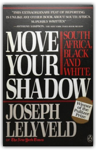
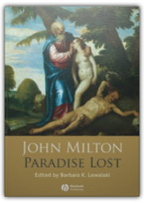
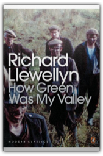
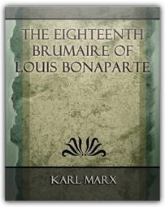
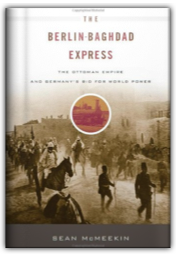
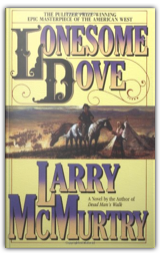

|

Move Your Shadow: South Africa, Black and White
Joseph Lelyveld

The complexities of South Africa are illuminated upon in this acclaimed work that takes a close, clear look at the strange realities within that country.

Paradise Lost
Barbara K. Lewalski, John Milton
In this authoritative edition of John Milton’s epic poem, Paradise Lost is presented in the original language of its 1674 publication, with explanatory annotations and word glosses.

How Green Was My Valley
Richard Llewellyn
Growing up in a mining community in rural South Wales, Huw Morgan is taught many harsh lessons. Looking back, where difficult days are faced with courage and the valleys swell with the sound of Welsh voices, it becomes clear that there is nowhere so green as the landscape of his own memory.
This biography reinterprets the great man's life and poetry. MacCarthy casts a fresh eye on Byron's childhood in Scotland, his embattled relations with his mother and his series of relationships with adolescent boys.
When George W. Bush campaigned for the White House, he was such a novice in foreign policy that he couldn’t name the president of Pakistan. But he was advised by a group that called themselves the Vulcans—a group of men and one woman with long and shared experience in government, dating back to the Nixon, Ford, Reagan, and first Bush administrations. After returning to power in 2001, the Vulcans—including Dick Cheney, Donald Rumsfeld, Colin Powell, Paul Wolfowitz, Richard Armitage, and Condoleeza Rice—were widely expected to restore U.S. foreign policy to what it had been in past Republican administrations. Instead, they put America on an entirely new course, adopting a far-reaching set of ideas and policies that changed the world and America’s role in it.
(Book Jacket Status: Jacketed) |

The Eighteenth Brumaire of Louis Bonaparte - 1913
Karl Marx
The Eighteenth Brumaire of Louis Bonaparte is one of Karl Marx most profound and most brilliant monographs. It may be considered the best work extant on the philosophy of history, with an eye especially upon the Ins-tory of the Movement of the Proletariat, together with the bourgeois and other manifestations that accompany the same, and the tactics that such conditions dictate...
All that is solid melts into air, all that is holy is profaned …Working men of all countries, Unite! This book truly changed the world, inspiring millions to revolution. Over 150 years after its publication, Marx and Engels' Communist Manifesto continues to inspire and provoke students, activists and citizens. The principles embodied within in it lie at the heart of thousands of academic and literary works. It is the starting point for people who refuse to accept that capitalism represents the final and optimum stage of human development. After reading this book, it is impossible to remain convinced that there is no alternative to unrestrained neoliberalism. In an introductory call to arms, renowned social theorist David Harvey asks us to look upon the Manifesto not as a historical document, but an invaluable tool for change.
Stephen Lewis, a successful writer of children's books, is confronted with the unthinkable: his only child, three-year-old Kate, is snatched from him in a supermarket. In one horrifying moment that replays itself over the years that follow, Stephen realizes his daughter is gone.

The Berlin-Baghdad Express: The Ottoman Empire and Germany's Bid for World Power
Sean McMeekin
The modern Middle East was forged in the crucible of the First World War, but few know the full story of how war actually came to the region. As Sean McMeekin reveals in this startling reinterpretation of the war, it was neither the British nor the French but rather a small clique of Germans and Turks who thrust the Islamic world into the conflict for their own political, economic, and military ends.

Lonesome Dove
Larry McMurtry
A love story, an adventure, and an epic of the frontier, Larry McMurtry’s Pulitzer Prize— winning classic, Lonesome Dove, the third book in the Lonesome Dove tetralogy, is the grandest novel ever written about the last defiant wilderness of America. Journey to the dusty little Texas town of Lonesome Dove and meet an unforgettable assortment of heroes and outlaws, whores and ladies, Indians and settlers. Richly authentic, beautifully written, always dramatic, Lonesome Dove is a book to make us laugh, weep, dream, and remember.
This volume is produced from digital images created by the Internet Archive for The University of Toronto Libraries. The Internet Archive and The University of Toronto Libraries seek to preserve the intellectual content of items in a manner that facilitates and promotes a variety of uses. The digital reformatting process results in an electronic version of the original text that can be both accessed online and used to create new print copies. To enhance your reading pleasure, HP.s patented BookPrep technology is used to clean and remove aging as well as scanning artifacts. This book and hundreds of thousands of others can be found at http://www.bookprep.com. To view the University of Toronto Libraries catalogue, please visit http://discover.library.utoronto.ca/catalogue/
Few writers roiled the American cultural scene like Henry Louis Mencken. Pathbreaking journalist, trenchant social observer, and unbridled humorist, Mencken was the most provocative and influential cultural critic of the last century. To read him today is to be plunged into an era whose culture wars were easily as ferocious as our own, in the company of a writer of boundless curiosity and vivacious frankness. In the six volumes of Prejudices published between 1919 and 1927, Mencken attacked what he felt to be American provincialism and hypocrisy, and championed writers and thinkers he saw as harbingers of a new candor and maturity. Laced with savage humor and delighting in verbal play, Mencken's prose remains a one-of-a-kind roller coaster ride over a staggering range of thematic territory: literature and journalism, politics and religion, sex and marriage, food and drink, music and painting, the absurdities of Prohibition and the dismal state of American higher education, and the relative merits of Baltimore and New York. Now, The Library of America restores the full text of Mencken's landmark work to print in a deluxe two- volume boxed set, ensuring that new generations of readers can rediscover his one-of-a-kind genius. |

Fogus
Collection Total:
193 Items
193 Items
Last Updated:
Dec 16, 2011
Dec 16, 2011
 Made with Delicious Library
Made with Delicious Library